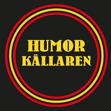

HUMORKÄLLAREN - Skånegatan 80
Free stand-up every Monday at Pet Sounds Bar featuring international acts with great music. Get there between 17-19 and you can catch happy hour prices. Win-win for you and your Tinder date.
BIG BEN COMEDY -Folkungagatan 97
Tuesdays, Thursdays and Sundays at Big Ben Pub. It’s always free to get some funny in Söder. Cheap beers, tasty bar snacks = great fun for a first date. Plus it won’t break your pockets. Just don’t sit directly in the front if want to keep it lowkey.
CROSSFIRE COMEDY - Adolf Frederiks Krykogata 12
Everybody hates Mondays except when it's loaded with laughter and tapas tapas tapas at Caliente Tapas Bar. Stand-comedy featuring big international and Swedish acts hosted by an expat so the vibes are English speakers, welcome if your date is from out of Sweden.
CANTINA REAL- Lindvallsgatan 11-13
If you're in the mood for some latino flavor and jokes. Every Monday this cozy little club located in Hornstull has humor for 100kr featuring top notch comedians, hosted by Nisse Hallberg. Also the menu is muy delicioso!
SPECIALISTARNA - Skanstull Ringvägen 104
Go to Dovas Skanstull If you’re a fan of Simon Gardenfors you’re in luck because he has a stand up show Specialistarna every Thursday featuring the comics from the alt scene. Plus you might get a rap performance. Win Win!
TSKNAS - Scalateatern Wallingatan 34
TSKNAS at Scalateatern. If you’re nodding yes, every Monday the podcasters host a stand-up show featuring podcasters, comics and the like. The theater is a chill vibe for a date and features some of the smartest, wittiest Swedish comedians.